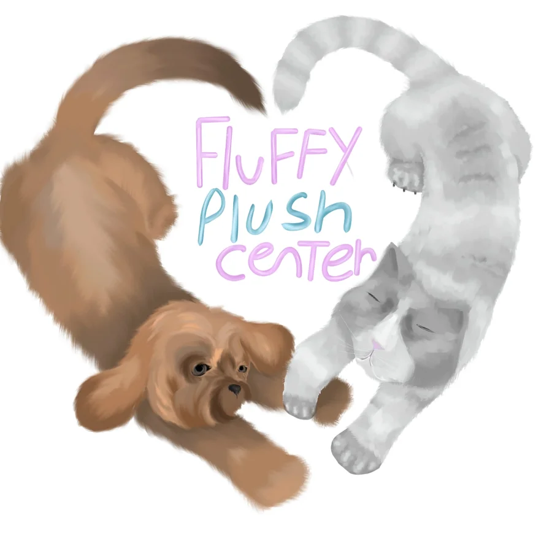
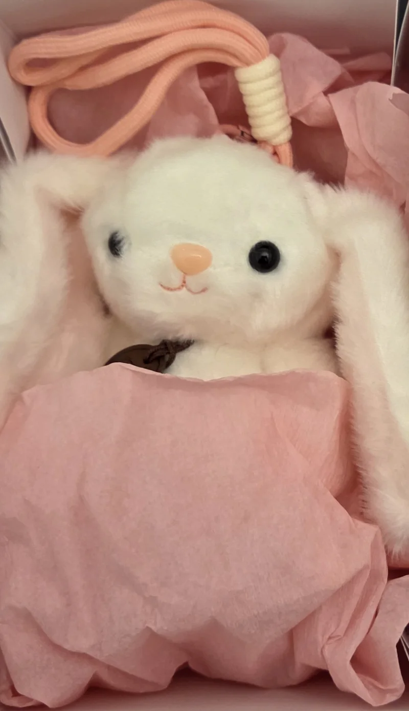
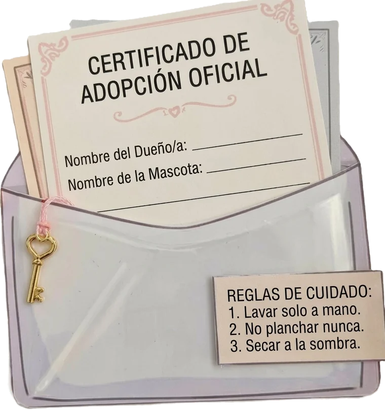
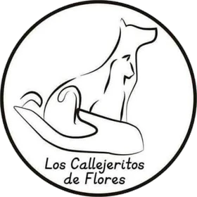

Peluches rescatados · Adopción responsable
No elegís a tu peluche. Él te elige a vos.
Cada cajita trae un peluche sorpresa que espera un hogar, con su certificado de adopción oficial. Y detrás de cada una hay un propósito real: la mayor parte de lo que ganamos va a los animales del refugio Los Callejeritos de Flores.


Un solo producto, lleno de detalles
La cajita Fluffy
Preparamos cada cajita a mano, una por una, como si fuera el traslado de un rescatado a su nuevo hogar.
Paquete de entrega especial
Adentro vas a encontrar
- Un peluche sorpresa, suavecito y listo para abrazar. No sabés quién te toca hasta abrirla.
- Su cajita-casita, ambientada con papel crepe para que viaje cómodo.
- El Certificado de Adopción Oficial, para completar con tu nombre y el nombre que le elijas.
- Sus reglas de cuidado, para que te acompañe mucho tiempo: lavar solo a mano, no planchar nunca y secar a la sombra.
$10.000
Precio único. La mayor parte de lo que ganamos va a Callejeritos de Flores.
¿Quién te va a tocar?
En un refugio no elegís por la foto: el vínculo aparece cuando se conocen. Por eso cada cajita trae un peluche distinto, y recién al abrirla descubrís quién te eligió. Probalo: tocá una cajita.
Cómo funciona una adopción Fluffy
-
Pedís tu cajita
En nuestro stand de los recreos o por mail, cuando quieras.
-
La abrís y se conocen
Recién ahí descubrís quién te eligió. Cada peluche es distinto y cada encuentro, también.
-
Lo adoptás oficialmente
Completás el certificado con tu nombre y el nombre que elijas para él. Desde ese momento es parte de tu familia.
-
Un callejerito de verdad recibe ayuda
Con lo que ganamos llevamos alimento y lo que haga falta a Callejeritos de Flores.

Nuestra alianza
Detrás de cada peluche, un callejerito de verdad
Fluffy Plush Center nació de una idea simple: si un peluche puede enseñar a cuidar, también puede ayudar a cuidar.
Por eso estamos aliados directamente con Los Callejeritos de Flores, un refugio que rescata animales de la calle, los cuida y les busca una familia. Un animal en la calle pasa frío, hambre y peligros todos los días. Los refugios como Callejeritos sostienen su trabajo gracias a voluntarios y donaciones, y cada bolsa de alimento cuenta.
Nuestra alianza hace que esa ayuda llegue sin intermediarios: vendemos las cajitas, juntamos lo recaudado y se lo llevamos al refugio convertido en lo que más necesita.

¿En tu casa hay lugar para uno de verdad?
Adoptar un animal es un compromiso para toda su vida: comida, cuidados, tiempo y mucho amor. Si tu familia está lista, en Callejeritos de Flores hay muchos esperando.
Conocelos en InstagramNuestra misión
Jugar a adoptar enseña a cuidar
Pensamos Fluffy para los chicos de los primeros años del colegio. Mirá nuestro pitch y conocé lo que cambia cada cajita, para cada uno.
Quiénes somos y por qué lo hacemos.
Somos un emprendimiento escolar con una idea: que un peluche con certificado y reglas de cuidado convierta el juego en una primera lección de empatía, responsabilidad y respeto por los animales. En este video te lo contamos.
Un certificado con su nombre es un compromiso.
Al completar el Certificado de Adopción Oficial y elegirle un nombre, el peluche pasa a ser su responsabilidad. Las reglas de cuidado que vienen en la cajita les muestran, jugando, que cuidar a alguien es algo de todos los días.
Cada cajita se convierte en ayuda concreta.
La mayor parte de lo que ganamos va directo a Los Callejeritos de Flores y llega al refugio convertida en alimento y en lo que más necesiten los animales que esperan un hogar.
Una charla en casa que puede cambiar una vida.
El peluche llega a casa y abre una conversación sobre la adopción responsable: qué implica cuidar a un animal y por qué tantos esperan un hogar. A veces, esa charla termina con un callejerito de verdad adoptado.
¿Querés tu cajita?
Tenés dos formas de conseguirla.
-
En el stand del colegio
Nos encontrás en los recreos, en el aula 3.